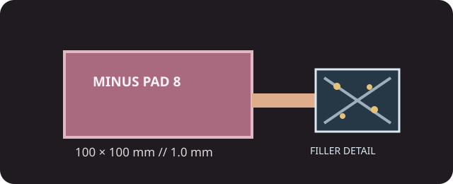

[ INDIVIDUAL COMPONENT // COOLING ]
Thermal Grizzly Minus Pad 8 100 × 100 × 1.0 mm
Ceramic/silicone-based compressible thermal pad with nano aluminum oxide; 100 × 100 mm sheet, 1 mm thick.

IDENTIFICATION: Exact part S-TG-MP8-100-100-10-1R. Minus Pad 8 is sold in several sheet sizes and thicknesses; this record is not a generic fit recommendation.
Manufacturer specifications
| Catalog subcategory | Thermal Accessories |
|---|---|
| Exact model / code | Thermal Grizzly Minus Pad 8; S-TG-MP8-100-100-10-1R |
| Material | Manufacturer describes a ceramic-silicon formula complex with nano aluminum oxide. |
| Dimensions / thickness | 100 × 100 mm sheet; 1.0 mm thickness. |
| Thermal conductivity | 8 W/(m·K), manufacturer data-sheet rating. |
| Electrical properties | Electrically insulating; dielectric strength 8 kV/mm by ASTM D149 in the manufacturer data sheet. |
| Additional maker ratings | Operating range −100 °C to +250 °C; UL 94 V-0 flammability rating and Shore 00-60 hardness. |
Application & compatibility cautions
- Use only where the host specifies a 1 mm pad and maintain the original footprint; excessive pad thickness or hardness can prevent heatsink contact with a GPU or CPU die.
- Remove both protective liners before installation. Do not stack pads, bridge an unintended electrical clearance, or reuse a pad after removal.
- Disconnect power and follow the system maker's service layout for VRAM, VRM, SSDs, and other devices; an insulating rating does not guarantee mechanical fit.
Manufacturer sources
- Thermal Grizzly — Minus Pad 8, 100 × 100 × 1 mmManufacturer product identity, material description, and size family.
- Thermal Grizzly — Minus Pad 8 data sheetManufacturer technical and electrical properties.
This static catalog entry is an identification aid, not a compatibility guarantee; use the device manufacturer's pad map and specified thickness.